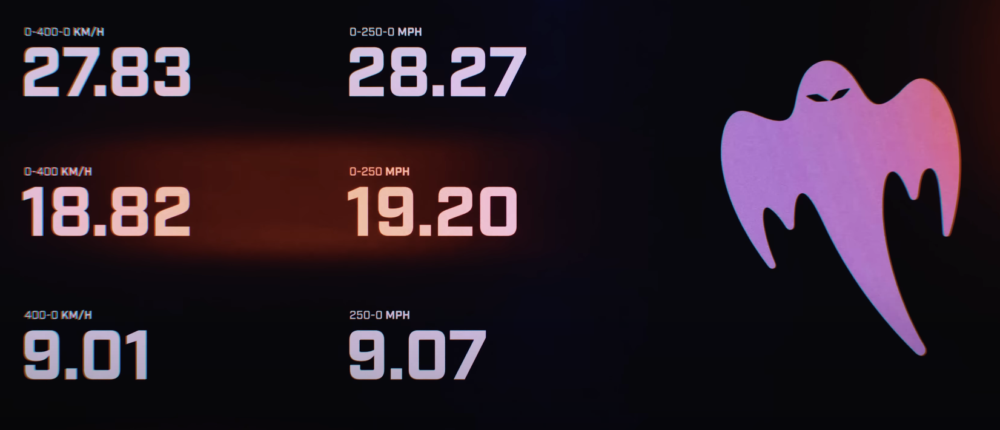
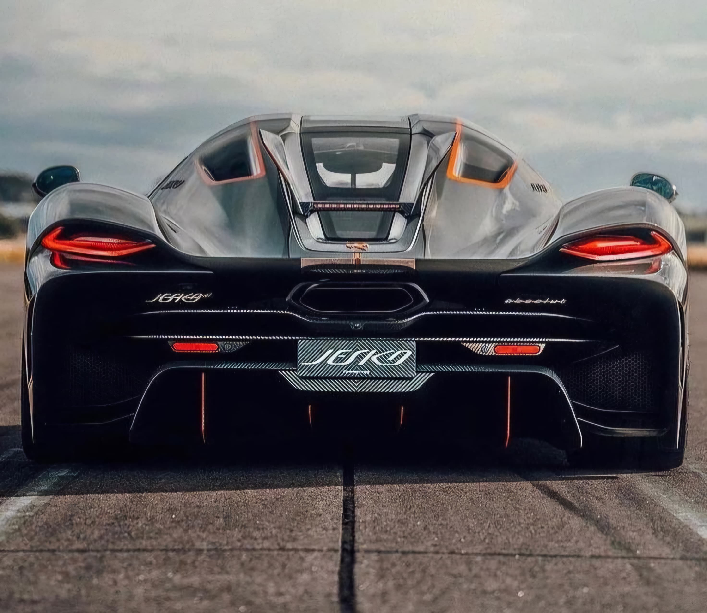

Performance

Per vedere il contenuto in un nuovo tab clicca qui.
Il Koenigsegg Jesko Absolut ha stabilito diversi record mondiali che riflettono le sue eccezionali capacità di performance.
È riuscito a completare la corsa da 0 a 400 km/h e ritorno a zero in soli 27,83 secondi, migliorando notevolmente il precedente
record detenuto dalla versione Regera del marchio. Inoltre, il Jesko Absolut ha ottenuto un tempo da 0 a 400 km/h in 18,82 secondi.
Questi tempi mettono in evidenza non solo la potenza bruta del motore, ma anche la capacità del veicolo di gestire tale potenza con
precisione e controllo eccezionali durante fasi critiche di accelerazione e frenata
Specifications

Per vedere il contenuto in un nuovo tab clicca qui
Motore
- Motore: V8 Twin Turbo da 5.0 litri
- Potenza: 1280 cavalli a 7800 giri/min (1600 cavalli con E85)
- Coppia: 1000 Nm da 2700 a 6170 giri/min, massima di 1500 Nm a 5100 giri/min
- Compressione: 9.0:1
Prestazioni
- Velocità massima: 480 km/h (298 mph)
- Accelerazione 0-100 km/h: Non specificata, ma estremamente veloce
Trasmissione
- Cambio: 9 marce automatica Koenigsegg Light Speed Transmission (LST)
Aerodinamica
- Coefficiente di resistenza (Cd): 0.278
- Aerofreni: Freni aerodinamici integrati
Telaio e Corpo
- Telaio: Monoscocca in fibra di carbonio con rinforzi in alluminio
- Peso: 1390 kg
- Dimensioni: Lunghezza 484.5 cm, Larghezza 203.0 cm, Altezza 121.0 cm
Freni e Sospensioni
- Freni anteriori: Dischi autoventilanti da 410 mm
- Freni posteriori: Dischi autoventilanti da 395 mm
- Sospensioni: Doppio braccio oscillante, ammortizzatori idraulici regolabili elettronicamente
Interni
- Materiali: Pelle o Alcantara con cuciture contrastanti
- Sistema audio: Digitale con Apple CarPlay e caricatore induttivo per telefono
Design

Per vedere il contenuto in un nuovo tab clicca qui
Il design del Koenigsegg Jesko Absolut è un punto focale nel raggiungimento di queste prestazioni record.
La vettura è stata progettata con un'enfasi significativa sulla riduzione della resistenza aerodinamica, permettendo così velocità massime superiori.
Oltre al suo motore V8 biturbo di 1.578 cavalli, il Jesko Absolut incorpora tecnologie avanzate come un sistema avanzato di aerodinamica attiva e un cambio leggero e ultra-rapido.
Queste caratteristiche sono complementate da un telaio in fibra di carbonio che offre sia leggerezza sia una rigidezza strutturale che contribuisce alla stabilità del veicolo ad alte velocità.
L'auto viene mantenuta il più vicino possibile alle condizioni di consegna, escludendo modifiche significative che potrebbero alterare la sua conformità come auto di produzione standard.
Trovate sotto alcune misure del miracolo ingegneristico.
- Lunghezza: 4,610 mm (181.5 in)
- Larghezza: 2,030 mm (79.9 in)
- Altezza: 1,210 mm (47.6 in)
- Massa: 1,320 kg (2,910 lbs)
- Peso massimo di down force a velocità elevata: 150 kg
Gallery

per vedere più immagini clicca qui.